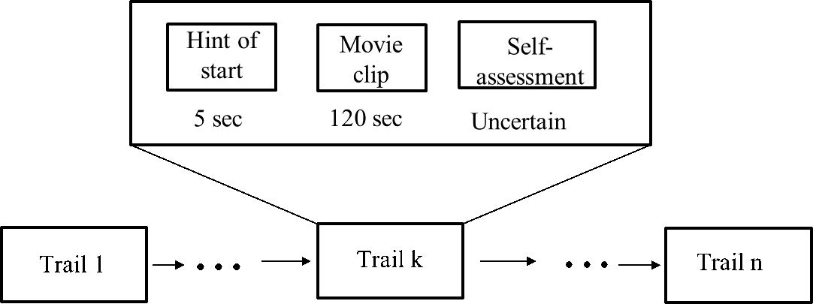

Abstract
We have provided a large-scale affective dataset for analyzing human emotional states. This dataset documents the electroencephalogram (EEG) data of 50 participants from Hebei University (24 males, 26 females). The brain signals were recorded throughout the experiment using a 32-channel EEG device at a sampling rate of 1000Hz, with the impedance kept below 5 kΩ during the experiment. The experiment was divided into four sections, with breaks given to the participants after each section, which they could use for rest and adjustment, or terminate early if needed. Each section consisted of six trials, with each trial including a 5-second cue signaling the start of the trial, followed by a two-minute video clip. Upon the conclusion of the video, the system automatically transitioned to a self-assessment interface, where participants rated each video on valence and arousal levels without any time limit. The detailed protocol is as follows:
illustrate
This dataset is publicly available, and we encourage other researchers to use it to test their own affect estimation methods. The dataset was first introduced in the following paper: HBUED: An EEG Dataset for Emotion Recognition.